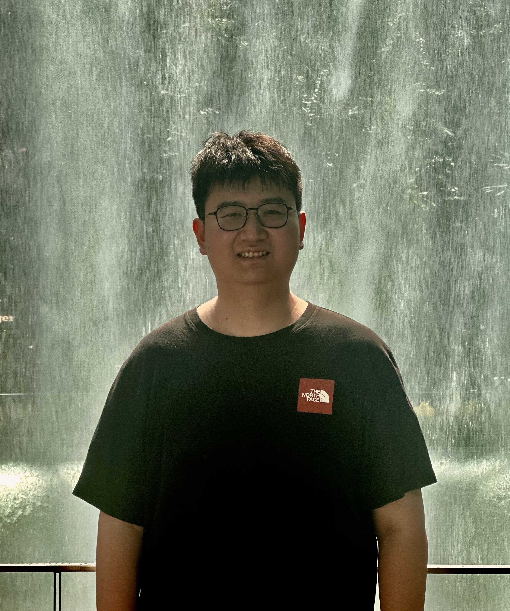
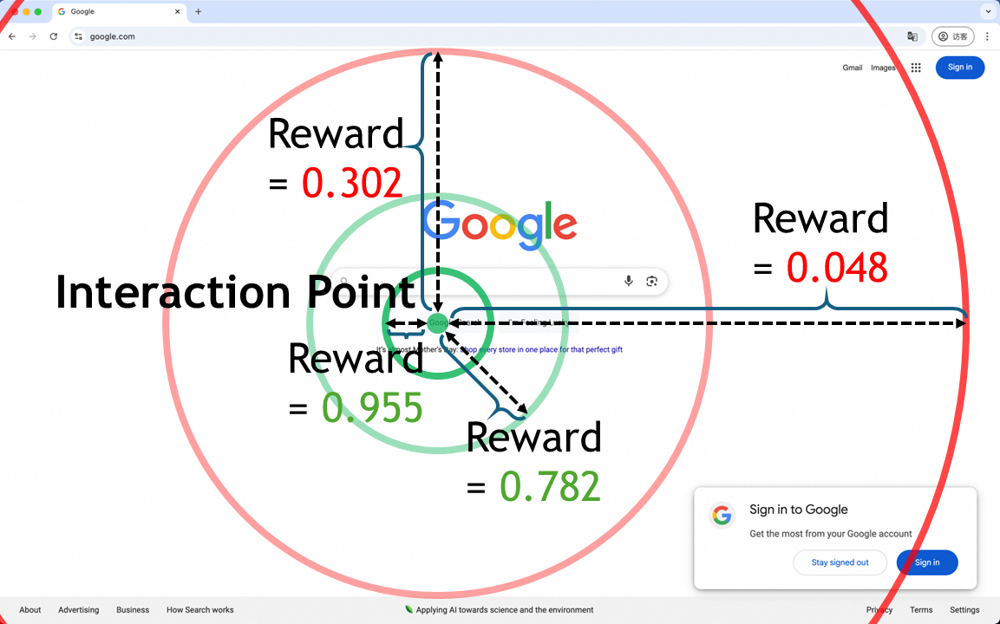

|
Jiaqi Tang
I am a Ph.D. student in Dept. of ECE at Hong Kong University of Science and
Technology (HKUST), starting from Fall 2025, supervised by Prof. Qifeng Chen. Prior to this, I earned my
M.Phil. in AI at HKUST
Guangzhou, jointly supervised by Prof.
Ying-Cong Chen and Prof. Qifeng Chen, in
2025.
Before that, I obtained B.Eng. in Data Science & Big Data Tech. and
Business Administration (Minor) with outstanding graduate at Northwestern Polytechnical University,
supervised by Prof. Wei
Wei, in 2022.
I am working closely with Dr. Xiaogang
Xu at MiroMind.
My research focuses on Multimodal Large Language Models
(MLLMs) and Agentic AI, including multimodal
perception, understanding, and reasoning.
If you are interested in my work,
please feel free to contact me to
discuss related topics or potential collaborations.
I am actively seeking global research internship
opportunities for Summer 2026.
Please feel free to contact
me.
Email /
Scholar /
Github
/
LinkedIn /
HuggingFace /
DBLP /
ORCID /
ResearchGate /
Kaggle
/
YouTube
|

Captured at
Singapore
|
News
• May 2026: One paper is accepted by ICML2026.
• Apr 2026: One paper is accepted by ISBRA2026.
• Apr 2026: Three papers are accepted by ACL2026 (2 Main + 1
Findings).
• Mar 2026: One paper is accepted by IEEE TMC.
• Mar 2026: One paper is accepted by CVPRW2026.
• Mar 2026: We released a comprehensive survey on intelligent
remote sensing agents (Project
Page)
• Jan 2026: Two papers are accepted by ICLR2026.
• Nov 2025: One paper is accepted by AAAI2026 Oral.
• Jun 2025: Two papers are accepted by ICCV2025, including one
Highlight.
• May 2025: I am happy to pass my M.Phil. Thesis Defence.
• Apr 2025: One paper is accepted by CVPR2025 Highlight.
• Nov 2024: Congratulations! Our paper, "AdaShadow: Responsive
Test-time Model Adaptation in Non-stationary Mobile Environments" is selected as
Best Paper Honorable Mention in ACM
SenSys 2024.
• Sep 2024: One paper is accepted by NeurIPS2024.
• Sep 2024: One paper is accepted by SenSys2024.
• Jul 2024: One paper is accepted by ECCV2024.
• Apr 2024: One survey is accepted by CVPRW2024 Oral.
• Feb 2024: One paper is accepted by CVPR2024.
• Jul 2023: One paper is accepted by ECAI2023 Long Oral.
|
|
|
Intelligent Remote Sensing Agents: A Survey
Jiaqi Tang*, Yingying Yan*, Qianzhou Wang*, Yuyang Xia*, Botong
Geng*, Jianmin Chen*, Ke Ma, Youyang Zhai, Qingfeng He, Weigeng Shao, Yunjin Sun,
Junwei Dai, Chuxi Chen, Xiaogang Xu, Kelu Yao, Lei Zhang, Wei Wei†, Qifeng Chen†,
Antonio Plaza, Yanning Zhang
Technical Report, 2026
paper
/
repository
Media Report:
Synced (机器之心) /
X /
Reddit
Curated collection of 100+ papers on intelligent remote sensing agents, with
datasets, benchmarks, and application domains.
|
Selective Research Papers [Full
List]
Some representative papers are highlighted.
*: Equal Contribution, †: Corresponding Author.
|
|
|
Robust-R1: Degradation-Aware Reasoning for Robust
Visual Understanding
Jiaqi Tang*, Jianmin Chen*, Wei Wei†, Xiaogang Xu, Runtao Liu,
Xiangyu Wu, Qipeng Xie, Jiafei Wu, Lei Zhang, Qifeng Chen†
AAAI Conference on Artificial Intelligence (AAAI), 2026 (Oral)
arXiv
/
code
/
model
/
data
/
demo
/
talk
/
bibtex
Media Report:
AI Era (新智元) /
Synced (机器之心) /
CVer /
HuggingFace Daily
Papers /
VALSE 2026
A new paradigm for robust adversarial learning of multimodal large models by
reasoning.
|
|

|
LPO: Towards Accurate GUI Agent Interaction via
Location Preference Optimization
Jiaqi Tang*, Yu Xia*, Yi-Feng Wu*, Yuwei Hu*, Yuhui Chen, Qing-Guo
Chen, Xiaogang Xu†, Xiangyu Wu, Hao Lu, Yanqing Ma, Shiyin Lu, Qifeng Chen†
Findings of the Association for Computational Linguistics (ACL Findings),
2026
arXiv
/
code
/
bibtex
Location preference optimization for accurate GUI agent interaction.
|
|
|
RhythmGuassian: Repurposing Generalizable Gaussian
Model For Remote Physiological Measurement
Hao Lu*, Yuting Zhang*, Jiaqi Tang, Bowen Fu, Wenhang Ge, Wei Wei,
Kaishun Wu, Ying-Cong Chen
IEEE/CVF International Conference on Computer Vision (ICCV), 2025
(Highlight)
bibtex
Repurposing generalizable Gaussian model for remote physiological measurement.
|
|
|
SURGEON: Memory-Adaptive Fully Test-Time Adaptation via
Dynamic Sparsity Activation
Ke Ma, Jiaqi Tang, Fan Dang, Bin Guo†, Sicong Liu, Cheng Fang, Zhui
Zhu, Lei Wu, Ying-Cong Chen, Zhiwen Yu, Yunhao Liu†
IEEE/CVF Conference on Computer Vision and Pattern Recognition (CVPR), 2025
(Highlight)
code
/
bibtex
Memory-adaptive test-time adaptation method that dynamically activates sparsity
for efficient adaptation.
|
|
|
AdaShadow: Responsive Test-time Adaptation for
Non-stationary Mobile Environments
Cheng Fang, Sicong Liu, Zimu Zhou, Bin Guo†, Jiaqi Tang, Ke Ma,
Zhiwen Yu
ACM Conference on Embedded Networked Sensor Systems (SenSys), 2024
(Best Paper Honorable Mention, Top 7/313)
bibtex
Responsive test-time adaptation framework for non-stationary mobile
environments.
|
|
|
Hawk: Learning to Understand Open-World Video
Anomalies
Jiaqi Tang*, Hao Lu*, Ruizheng Wu, Xiaogang Xu, Ke Ma, Cheng Fang,
Bin Guo, Jiangbo Lu, Qifeng Chen, Ying-Cong Chen†
Annual Conference on Neural Information Processing Systems (NeurIPS), 2024
code
/
demo
/
model
/
dataset
/
website
/
bibtex
Media Report:
Zhihu (知乎) /
PaperWeekly /
autodriving-heart
(自动驾驶之心) /
VALSE 2025
We first propose Video Anomaly Understanding (VAU) task and
open-sourced the
first base model.
|
|
|
An Incremental Unified Framework for Small Defect
Inspection
Jiaqi Tang, Hao Lu, Xiaogang Xu, Ruizheng Wu, Sixing Hu, Tong
Zhang, Tsz Wa Cheng, Ming Ge, Ying-Cong Chen†, Fugee Tsung
18th European Conference on Computer Vision (ECCV), 2024
code
/
project page
/
bibtex
An incremental unified framework for small defect inspection in industrial
applications.
|
|
|
Learning to Remove Wrinkled Transparent Film with
Polarized Prior
Jiaqi Tang, Ruizheng Wu, Xiaogang Xu, Sixing Hu, Ying-Cong Chen†
IEEE/CVF Conference on Computer Vision and Pattern Recognition (CVPR), 2024
code
/
project page
/
bibtex
Learning-based method to remove wrinkled transparent film using polarized prior
information.
|
|
|
High Dynamic Range Image Reconstruction via Deep
Explicit Polynomial Curve Estimation
Jiaqi Tang, Xiaogang Xu, Sixing Hu, Ying-Cong Chen†
26th European Conference on Artificial Intelligence (ECAI), 2023
(Long Oral)
code
/
arXiv
/
talk
/
bibtex
High dynamic range image reconstruction through deep explicit polynomial curve
estimation.
|
Internship & Professional Experience
|
|
2026 -
Now
Project Up Research Intern (青云计划), Hunyuan, Tencent
(Shenzhen, China).
Exploring Agentic AI.
Host: Dr. Tianyu Pang.
|
|
|
2025 -
2026
Research Intern, DeepRoute
(Shenzhen,
China).
Exploring the VLA base model in driving trajectory prediction
post-training.
|
|
|
Summer
2025
Research Intern, Sony (Tokyo,
Japan).
Exploring efficient MLLMs via visual token compression.
Host: Dr. Hiromi Wakaki.
|
|
|
2024 –
2025
Research Intern, Ovis
Team, Alibaba
(Hangzhou, China).
Exploring preference optimization in the accurate interaction of the
GUI agent.
Exploring multi-modal data generation in MLLMs.
Host: Mr. Qing-Guo Chen.
|
|
|
2022 –
2024
Research Intern, SmartMore (Hong
Kong).
Exploring robust image enhancement algorithms in the industrial
environment.
Host: Dr. Jiangbo Lu and Dr. Sixing Hu.
|
|
Awards
Best Paper Honorable Mention (7/313), by ACM SenSys 2024.
Best Intern of the Year, by SmartMore Corporation in 2023.
Outstanding Graduate, by Northwestern Polytechnical University
in 2022.
National Scholarship (Top 1/44), by The Ministry of Education
of the People's Republic of China in 2021.
Tencent Scholarship - First Class, by Tencent in 2021.
First Class Scholarship, by Northwestern Polytechnical
University in 2021.
Winner Award (1st Rank), NTIRE-CVPR (New Trends in Image
Restoration and Enhancement) Challenge on Multi-modal Aerial View Object
Classification, Track 1 (SAR) in 2021.
Second Class Scholarship, by Northwestern Polytechnical
University in 2020.
|
Professional Activities, Skills & Others
Journal Reviewer:
• IEEE
Transactions on Pattern Analysis and Machine Intelligence (T-PAMI)
• International Journal of
Computer Vision (IJCV)
• IEEE
Transactions on Image Processing (TIP)
• Pattern
Recognition (PR)
Conference Reviewer:
• CVPR (25, 26 -
)
• ICCV (25 -
)
• ECCV (26 -
)
• NeurIPS (24,
25, 26 - )
• ICML (25, 26 - )
• ICLR (24, 25 - )
• ACL Rolling
Review (25 - )
• AAAI (25,
26 - )
• BMVC (26 -
)
• ECAI (23)
Organization: IEEE Student Member, AAAI Student Member, EurAI
Student Member.
Coding: Python (PyTorch, DeepSpeed), Java, C/C++, Matlab, SQL,
Verilog, MIPS 32/64, IBM ILOG CPLEX, R and LATEX.
Languages: English (Fluent) and Chinese (Native).
Hobbies: I started learning Go when I was very young (Amateur 4
Dan, certified by the Chinese Weiqi Association). I also really enjoy traveling
(see my Gallery) and playing table tennis.
|
|
{kind=link}